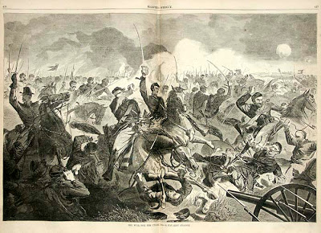
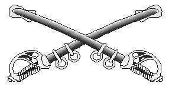

"Well, there ain't no GOOD way to charge an artillery battery." -- Nathan Bedford Forrest.


Winslow Homer's idealized Civil War cavalry charge.Given the recent discussion of swords, I thought some of you might like to read some discussion of the cavalry saber in the War Between the States.
Gervase Phillips' essay "Sabre versus Revolver: Mounted Combat in the American Civil War" is an excellent overview of the subject. I reprint the essay in its entirety below because the formatting at the original site is difficult to read.
Phillips refers to another valuable source on cavalry fighting of the Civil War, Frederick Whittaker's Volunteer Cavalry: The Lessons of the Decade. Back in the late 80s and early 90s, I was a cavalry re-enactor, belonging first to a mounted unit, then a dismounted one, the 7th Tennessee Cavalry, based in Memphis. Eventually, I was a founding member of the 1st Alabama Union Cavalry, Company C.
The best dismounted cavalry units were always in a constant "authenticity" struggle, both with the mounted units (who disdained getting down off their horses to fight with carbines) and other dismounted units who were, to say the least, not entirely connected to the realities of Civil War cavalry combat as well as the actual appearance of the original units they claimed to represent.
One thing that the 7th Tennessee and the 1st Alabama did was to comb the original sources of Civil War cavalry history to improve our performance. Whittaker was one source I turned up in our research. Back then, I did a search for original copies in libraries and finally found one copy that I requested inter-library loan and then xeroxed. Today, such effort is not necessary, for Whittaker's slim volume is available on Google Books here.
Frederick Whittaker was born in London on 12 December 1838. His father was a solicitor, but, having endorsed some papers for a noble client who defaulted, he was obliged to flee to the Continent to escape being imprisoned for debt. In 1850 Frederick came to New York City, where he obtained a position as managing clerk in a law office. After experiencing the legal profession from a worm's eye view, Whittaker decided it wasn't for him, and left to join an architectural firm as an assistant but poor eyesight forced him to quit.
He tried his hand at writing, with some small success, until the outbreak of the War Between the States. He enlisted 11 November 1861 at Camp Scott, Staten Island, as a private in Company L, 6th New York Cavalry. He was transferred to Company D in the same regiment 16 February 1863, and was honorably discharged 15 December 1863, as a corporal, to enable him to enlist as a veteran volunteer. He re-entered the same organization 16 December 1863. In the Battle of the Wilderness, in May, 1864, he was shot through the left lung and was promoted to 2nd Lieutenant on 12 February 1865, in Company A. He was mustered out and honorably discharged 9 August 9, 1865, as 2nd Lieutenant, Company A, New York Provisional Cavalry. Although he later claimed to have been brevetted the temporary rank of Captain, the record does not support this.
After the war he worked as a book agent for a while, and then taught school. During this time Whittaker began to seriously write fiction and non-fiction for a variety of publications. In the Army and Navy Journal in early 1871, he published a series entitled: "Volunteer Cavalry, the Lessons of the Decade, by a Volunteer Cavalryman," in which he gave personal experiences during the war. He later wrote a worshipful hagiography of George Armstrong Custer after the latter's death at Little Big Horn and picked public fights with Major Marcus Reno and Captain William Benteen over their alleged "treason" to Custer in failing to support him on 25 June 1876.
One source described Whittaker as "always of an excitable disposition, irascible, and at times became extremely violent."
On 13 May 1889 Whittaker returned home from his office at the Mount Vernon, New York, newspaper. After meeting his wife at the door and exchanging some pleasantries, Whittaker ran up the stairs.
He always carried a revolver in his pocket and, apparently taking it out to put it away as was his custom on returning home, when he reached the head of the stairs his cane seems to have caught in the banisters, tripped him, and he fell, breaking the rail. His pistol exploded and he was shot in the head, dying in half an hour without regaining consciousness. His wife, three daughters, and a stepson survived him.
As a fan of Fred Benteen, I don't think much of Whittaker's biography of Custer. As the American Indian Movement bumper sticker in the 1970s read: CUSTER HAD IT COMING.
Volunteer Cavalry, on the other hand, is extremely useful because -- unlike Custer -- Whittaker was writing about a subject he knew well.
His points about the saber (and Gervase Phillips' repetition of them in the essay below) are interesting, but they were passe even when Whittaker wrote in 1871. The repeating rifle killed the mounted charge with saber as dead as the dinosaurs. And right behind the repeating rifle came the Maxim gun. The weapon may still have been as deadly one-on-one, but the mounted charge as a tactic (even with pistols) was now obsolete. That the mass of horsemen waving three foot razors is psychologically daunting is without doubt -- to unprepared troops in the open. (So, too, is the bayonet.) But to a dug in enemy behind cover in a woodline, they became just so much easy meat.
Whittaker's love of the saber aside, it is the rest of his discussion of cavalry fighting and tactics -- especially that of the dismounted skirmish line -- that is most useful. Here we see the beginnings of what would later be codified in the American Army as Upton's Infantry Tactics. The horse, no longer the mounted knight's battle platform becomes something entirely more useful -- a means of rapidly getting men who fight on foot around the battlefield. They still provide all the traditional uses of cavalry -- reconnaissance, screening, pursuit -- but in the face of a rifle skirmish line, whether of infantry or cavalry (and certainly of artillery, a fact that had been demonstrated by the Charge of the Light Brigade in the Crimean War before Whittaker took to the saddle) the mounted charge was an invitation to mass suicide.
The last mounted charge of the US Army horse cavalry -- 26th Cavalry Regiment, Philippine Scouts, 16 January 1942.

Horse cavalry would serve on into the 20th Century. The last mounted charge of American cavalry would take place during the Bataan Campaign on 16 January 1942, carried out in desperation by the 26th Cavalry (Philippine Scouts). Led by LT Ed Ramsey, G troop, 26th Cavalry, the charge with .45s drawn was successful in driving back the Japanese temporarily, but after breaking the Japanese line, Ramsey did the sensible thing and dismounted his men to continue the fight on foot. In the end, the American and Filipino forces were forced to pull out of the hard-won village. After the 26th withdrew into the prepared siege lines further down the Bataan Peninsula, they fought as infantry and were later forced to eat their mounts. A first-hand description of "the last charge" can be found in Ramsey's autobiography Lieutenant Ramsey's War: From Horse Soldier to Guerrilla Commander.
Yet as obsolete as the horse-mounted charge is, the concept of rapid movement of soldiers to deploy to fight on foot has found its ultimate expression in the mechanized infantry and cavalry scouts of today.
The only sabers these soldiers sport are the crossed saber insignia on their covers.
Mike
III


Sabre versus Revolver: Mounted Combat in the American Civil War
By Gervase Phillips
On 1st April, 1865, in thick woodland near Maplesville, Alabama, two bodies of horsemen fought a short and bloody skirmish. The Confederate General Nathan Bedford Forrest and his immediate staff were outnumbered four to one by the Federal troopers who rode boldly at them, sabers drawn. Yet this hectic mêlée among the trees was dominated by the cracking reports of the Navy Colts carried by the Rebel troopers. Forrest suffered a glancing blow to the head from a saber cut, but shot his assailant from the saddle. Six of his entourage were also wounded, but, it was said, some thirty Union cavalrymen had been killed in the encounter, and a larger number still were wounded. The day belonged to the revolver.
Indeed, for many civil war cavalrymen, the day of cold steel was altogether over. John S. Mosby recalled that ‘we had been furnished with sabers … but the only real use I ever heard of their being put to was to hold a piece of meat over a fire. I dragged one through the first year of war, but when I became commander I discarded it.’ The Canadian colonel George T. Denison, who talked at length with many veterans of the conflict, criticized ‘old-fashioned cavalry officers’ and urged ‘that cavalry intended for the battlefield’ should henceforth ‘rely greatly upon the revolver.’ It is, therefore, surprising to find another veteran trooper who expressed a very different opinion. Captain Frederick Whittaker, of the 6th New York Cavalry, was adamant that he ‘never remembered an instant in which the saber charge, resolutely pushed, failed to drive the pistols.’ Whittaker cannot simply be dismissed as a blimpish reactionary.
A thorough survey of cavalry combat during the war confirms many instances of the triumph of saber over revolver. On 17th May 1863, in a skirmish at Bradyville Pike, Tennessee, two companies of Federal Tennessee cavalry under Major- General John Palmer charged 80 troopers of the 3rd Georgia Cavalry: ‘we came on them under a quick fire, but they broke when we got within 100 yards. We pursued them a mile, and have 18 prisoners … The enemy, after they reached the wood, rallied and fought well, but they had no sabers, and only inflicted a few slight wounds.’ After the battle of Winchester, 19th September 1864, Brigadier-General George Armstrong Custer recalled that ‘the enemy relied wholly upon the carbine and the pistol; my men preferred the saber. A short but costly struggle ensued, which resulted in the repulse of the enemy.’ For the historian of cavalry, this presents something of a puzzle. It is difficult to understand why, in one combat, the revolver should have so completely bested the saber, and yet, on another occasion, the saber proved the better weapon.
The contest between the weapons was, of course, never quite that straightforward. Each encounter was shaped by a host of factors: the training and experience of the rival units; the condition of their mounts; the boldness of their leadership and the tactical circumstances in which they found themselves, from the sudden ambush of small patrols to the clash of whole brigades in set-piece engagements. A consideration of the characteristics of the rival weapons in combat leads to the conclusion that both weapons were still of considerable value; the trick was to know when to trust to fire, and when to trust to steel. There was, however, a particularly serious obstacle to the effective use of the saber during the war: the lack of training in its use.
In 1861, there was little thought given to attempting to raise volunteer mounted forces comparable to regular cavalry. Colonel Francis Lippitt explained this hesitancy. Since it took three years to train such cavalry properly, it seemed that the undoubted expense of raising such units would be wasted. The war would be over, it was assumed, before they could be deployed. Nor was the ‘rugged, mountainous or densely wooded’ countryside over which much of the fighting was likely to take place well suited to conventional cavalry. The preference, therefore, was to raise light cavalry, ‘of a kind requiring comparatively but little time and training,’ to perform the tasks of outpost duties, patrols, escorts, foraging parties, reconnaissance and providing the advance, rear and flank guards to marching armies. They were not, however, generally trained to deliver charges on the battlefield. Nor was it possible at the beginning of the war to equip all troopers with sabers.
In June 1861, Jubal Early, then a colonel in Lynchburg, Virginia, complained ‘there is no company of [Confederate] cavalry here fully armed. Two companies have doublebarrelled shotguns but no sabers. There are two companies tolerably well drilled, with forty or fifty sabers each…’ Federal troopers were often no better off. The 2nd Illinois Cavalry, in Paducah, Kentucky, later that year, was short of sabers, pistols and carbines and was thus, ‘not adequate to attempt the service of scouting this part of the country…’ Lances, made by local blacksmiths and carpenters, were issued to some Union cavalry regiments around Washington in January 1862, until sabers could be provided. (The 6th Pennsylvania, ‘Rush’s Lancers,’ was an exception; the lance was their weapon of choice until early 1863.
In the far west, two companies of the Rebel 5th Texas Cavalry carried lances and a company of Federal Native California Cavalry was armed with the lance as late as October 1864). For many Civil War troopers, the saber was an unfamiliar weapon; even if they were issued one they were rarely fully trained in its use. This was readily apparent in the way the weapon was handled in the field. The original regulation saber issued to Federal troopers was a rather clumsy, long, heavy sword, of a Prussian pattern. This was later replaced by a lighter, curved saber, a more suitable weapon for light cavalry but still difficult to master.
In combat, officers who had been taught to fence used the point of the blade to deadly effect, but enlisted men tended to hack and slash at the head or upper body, often wounding the enemy but without killing or incapacitating him. After colliding with Stuart’s cavalry at Boonesborough, 8th July 1863, Colonel Preston, 1st Vermont Cavalry, thus reported ‘the charge was spiritedly made and sabers freely used, as the heads of my men will attest.’ In November, 1861, Joseph Hooker, then a divisional commander, said this of his cavalry, ‘with good arms and a little training [they] might be of great service…’ In the meantime though, ‘I felt apprehensive in dispatching them in troops beyond supporting distance, with no arms of any account but their sabers, and they are not skilled in the use of those.’ For many, it was this simple lack of training that accounted for any failure by saber-armed troopers. Whittaker went so far as to claim that ‘in all instances during the war in which the saber proved ineffective it may be safely asserted that it was owing to two things – want of fencing practice and blunt sabers.’
Arthur Freemantle, a British officer who spent three months in the Southern States, April-June 1863, described cavalry combats as ‘miserable affairs.’ He noted how rival bodies of troopers approached each other to within forty yards and then ‘at the very moment when a dash is necessary, the sword alone should be used, they hesitate, halt and commence a desultory fire with carbines and revolvers.’ Confederate troopers he noted, ‘wear swords but seem to have little idea of using them – they hanker after their carbines and revolvers…’ Yet, while recognising that lack of training in swordsmanship was an inhibiting factor in the combat effectiveness of the saber, we should be wary of accepting this explanation wholesale. Freemantle was not in the country long enough to appreciate fully how skilled the rival cavalries became. The ‘miserable’ skirmishes that he witnessed in June 1863 took place during a wearying series of cavalry engagements in northern Virginia, when both sides were trying to preserve the strength of their horses.
This brings us to another crucial factor in the saber versus revolver equation: the condition of the mounts. On campaign troopers struggled to care for their over-burdened, under-fed and exhausted mounts; many were, thus, in generally poor condition, unfit for shock action. Additionally, the demand for horses, and the activities of some unscrupulous purchasers, led to many unsuitable animals being issued to regiments. The Union Quarter-Master General, M.C. Meigs received a report in mid-1863 that described one shipment of 100 horses from New York: only 48 were fit for service, the rest were diseased, too young or simply, ‘quite used up.’ In one instance, horses were confined to railroad cars for fifty hours, unfed and unwatered. Weak, starving and thirsty, they were then issued for immediate service to a regiment in the field. Such a poorly-mounted regiment could be quickly reduced to a pathetic spectacle.
Chaplain Henry Pyne, 1st New Jersey Cavalry, recalled the state of his regiment after seven days campaigning in the Shenandoah Valley in late May 1862: ‘with increasing frequency men could be seen to dismount and attempt to lead forward their enfeebled animals, which, with drooping heads, lacklustre eyes, and trembling knees could scarcely support the weight of the saddles and equipments.’ The mortality rate was horrific. Louis Philippe, the Comte de Paris, aide-de-campe to McClellan, estimated that in the opening twelve months of the war ‘more than one regiment used up three horses to every man’ and that ‘it was only through the severest discipline that troopers were taught at last to take care of their horses.’
Confederate troopers initially faired better than Federals, for they supplied their own horses. However, once the South had lost control of the horse breeding regions of Missouri, Kentucky, Tennessee and trans-Allegheny Virginia, procuring remounts and draft animals became one the Confederacy’s most pressing military problems. Tactically it led the individual trooper to become warier of taking risks in battle. An 1864 report on the cavalry of the Army of the Tennessee noted ‘that the soldier will invariably take so much care of his horse as to feel at least disinclined to risk it in battle.’ In the east, Lieutenant-Colonel W. W. Blackford lamented that ‘the most dashing trooper was the one whose horse was the most apt to be shot, and when this man was unable to remount himself he had to go to the infantry service… Such a penalty for gallantry was terribly demoralizing.’
In the worst cases, regiments that could no longer procure suitably large, fast and strong mounts ceased to operate as cavalry but became de facto mounted infantry. Heros von Borcke, the Prussian adventurer who served the Confederacy, noted that the quality of horses had so declined by 1863 that ‘one was obliged by this fact to have greater bodies of cavalrymen used as dismounted sharpshooters.’ The generally poor condition of Civil War mounts favored the revolver over the saber in close combat. The cavalryman relying on edged weapons needed his mount to be nimble, fast and strong for he dueled as much with his horse as he did with his blade. When firing a revolver from the saddle, the condition of the horse was far less important.
A good illustration of this point comes from the Crimean War of 1853-56. Captain Soame Jenyns, of the ill-fated British Light Brigade, had been pursued by three Russian Cossacks while retreating from ‘the valley of death’ at Balaklava. His horse was too badly wounded to risk duelling with his saber, so he shot one of his assailants with his revolver and the others hastily withdrew. For Civil War horses it was less likely wounds than exhaustion that left them unequal to the demands of saber tactics. General William Averell, a divisional commander in the Army of the Potomac, testified to the Joint Committee on the Conduct of the War in 1863 that ‘our cavalry has been confined very much to details, and had a great deal of duty to do which did not properly belong to it... We have done a great deal of picketing, independent of the infantry. That has worn down our horses and worn out our equipment ....’ It is circumstances like this that largely explain those ‘desultory’ combats with revolvers and carbines that Freemantle witnessed.
Yet there were commanders on both sides whose faith in l’arme blanche (‘the white arm’) was unshakable. Their belief transmitted itself to their men; properly trained and with sufficiently high standards of horse-mastery to keep their mounts in ‘hard condition,’ these regiments demonstrated the continued potency of the saber, even in the face of the revolver. Jeb Stuart was one such practitioner of saber tactics. During his audacious three-day ride around the Army of the Potomac, 12th-15th June1862, von Borcke recalled ‘we were obliged to fight all the way through, charging continually with sabres in hand the hostile cavalry forces which in all haste were dispatched to oppose us…’ Across the lines, there were commanders in blue with a similar attitude; at Kelly’s Ford, 17th March 1863, Colonels Alfred Duffié and J. B. McIntosh brought the 1st Rhode Island, 4th Pennsylvania and 6th Ohio into line, drew sabers and charged, driving Rebel cavalry from the field ‘in magnificent style.’ The battle-hardened cavalries now looked more and more to the saber. Francis Lippitt, noting the reliance on revolvers, shot-guns and carbines in the early stages of the war, suggested that ‘it was not until the fight at Brandy Station [9th June 1863] that sabres were used, to any extent, at close quarters.’
The cavalry campaign of late spring 1863, and the battle at Brandy Station in particular, does seem to have been watershed in many ways. The creation of the Federal Cavalry Bureau earlier that year had improved both the quality of remounts and the care of injured and sick horses.
The creation of a Cavalry Corps for the Army of the Potomac concentrated regiments en masse and allowed for units of a sufficient size to undertake independent, or ‘strategic,’ operations, such as the attempt to beat up Stuart’s camps at Culpepper and get information as to the enemy’s position and movements that led to the clash at Brandy Station. In this set-piece cavalry versus cavalry encounter, in which whole brigades charged in concert, the traditional weapon of the horse soldier, the saber, proved supreme. Blackford asserted that ‘there was here presented in a modern battle that striking phenomena of gunpowder being ignored almost entirely. Not a man fought dismounted, and there was heard but an occasional pistol shot and but little artillery, for soon after the opening of the fight the contest was so close and the dust so thick that it was impossible to use either without risk to friends.’ Both sides emerged from the engagement with a strengthened faith in the saber; Stuart congratulated his men for demonstrating once more the ‘proof-steel’ of their mettle and told them ‘with an abiding faith in the God of battles, and a firm reliance on the saber, your success will continue.’
Yet, lacking remounts and short of fodder, the Rebel cavalry was less and less able to compete as an arme blanche force. By the time of Sheridan’s campaign in the Shenandoah, August to October 1864, it was painfully obvious that a mounted force relying on firepower was unequal to meeting one that could use the saber in large-scale engagements. After seeing Confederate troopers defeated at Fisher’s Hill, 9th October 1864, Jubal Early concluded glumly that his cavalry, ‘have no sabers and the consequence is that they cannot fight on horseback, and in this open country they cannot successfully fight on foot against large bodies of cavalry.’
To understand why the revolver was not a match for the saber in these engagements, requires us to look at the particular characteristics of the weapon. Early in the war there were not enough to go around and some troopers were initially issued obsolete singleshot flintlock pistols. Yet, as the war progressed, the ‘revolving pistol’ became nearubiquitous, favored for its rapid fire and its utility in both mounted and dismounted combat. On the other hand, as Blackford suggested, the inaccuracy of fire from the saddle was a problem; in a swirling mêlée of hundreds of horsemen, the revolver was as much a danger to friend as foe.
A second disadvantage was psychological. The man who relied on firepower from the saddle was reluctant to charge home and often fired his revolver at too long a range. Furthermore the revolver charge lacked the ‘moral force’ of an arme blanche charge. The enemy’s resolve was strengthened by the knowledge that the oncoming horseman would not charge to impact. The point is well illustrated by an incident that occurred during the expedition from New Berne to Rocky Mountain, North Carolina, in July 1863. Major Floyd Clarkson, 12th New York Cavalry, delivered a revolver charge against Rebel skirmishers hovering on the edge of a wood; most of the weapons were discharged prematurely ‘and their fire lost.’ The Federal troopers wheeled away, leaving the Rebels firmly standing their ground. Clarkson rallied his men and now ordered ‘sabers to be drawn’ for a conventional charge. The startled enemy broke and fled. Yet we cannot be dismissive of the revolver. All over the world, types of light cavalry, particularly those associated with frontier zones, developed tactics for mounted combat that utilised open-order or ‘swarm’ formations. These were found useful for the fast-moving operations of border warfare: the raid; the pursuit; the ambush. Furthermore they were especially suited to relatively small bodies of troopers operating in broken country.
The French Empire’s Chasseurs d’Afrique often attacked in a loose mounted skirmish line, a formation they called ‘en fourraguer.’ American light cavalry essentially operated in much the same context and thus they too often fought ‘as foragers.’ This was particularly true where the terrain was wooded, coherent shock action by a whole regiment or brigade was impossible and fighting broke down into a series of individual duels or clashes between small bodies of troopers. In these engagements the revolver was supreme. Those units, like Mosby’s or Forrest’s, that fought primarily as raiders or partisans excelled with the weapon, as did troopers steeped in ‘frontier’ warfare, such as the Texas Rangers. In short, the saber may have retained its place as the premier arm for battle-cavalry, but the patrol that ventured into woodland without revolvers was asking for trouble.
At the beginning of the twentieth century, when cavalry armament was again a matter of considerable debate, Captain Alonzo Grey, 14th US Cavalry, undertook a detailed study of the lessons of the Civil War. On the question of saber versus revolver, he concluded that, ‘each weapon has its distinct and proper uses, and neither can replace the other; neither can either of them be discontinued as a necessary part of modern cavalry armament.’ This was certainly a perceptive reading of the evidence and explains why, for as long as western armies continued to field cavalry, the American trooper was amongst the most heavily armed, with his carbine for dismounted combat, his revolver for the skirmish and his saber for the charge.
Sources: The War of the Rebellion: A Compilation of the Official Records of the Union and Confederate Armies, 127 Volumes, (Washington DC: US War Department, 1880-1901), [CD-ROM Version, Zionsville: Guild Press of Indiana, 2000]
The Report of the Joint Committee of the Conduct of the War (Washington: Government Printing Office, 1863).
W. W. Blackford, War Years with JEB Stuart (Baton Rouge: Louisiana State University Press, 1993)
Heros von Borcke, Memoirs of the Confederate War for Independence, 2 Vols (Peter Smith, New York, 1938)
George T. Denison, A History of Cavalry from the Earliest Times with Lessons for the Future (Macmillan, London, 1913)
Arthur J. L. Freemantle, Three Months in the Southern States, April-June 1863 (Lincoln: University of Nebraska Press, 1991),
Alonzo Gray, Cavalry Tactics as Illustrated by the War of the Rebellion (Fort Leavenworth: US Cavalry Association, 1912)
Francis Trevelyan Miller (ed.), The Photographic History of the Civil War, Vol. 4 (New York: Review of Reviews, 1911)
Henry Pyne Ride to War: The History of the First New Jersey Cavalry (New Brunswick: Rutgers University Press, 1961)
Charles W.Ramsdell, “General Robert E .Lee’s Horse Supply, 1862-1865", The American Historical Review, 35 (1930), 758-777.
Stephen Z.Starr, "Cold Steel: The Sabre and Union Cavalry", Civil War History, xi (1965),142-159.
Stephen Z.Starr, The Union Cavalry in the Civil War, 3 Volumes (Louisiana State University Press, Baton Rouge, 1979-1981)
F. Chenevix Trench, Cavalry in Modern War (London: Kegan Paul, 1884)
Russell Weigley, Quartermaster General of the Union Army: A Biography of M.C.Meigs (Columbia University Press, 1959)
6 comments:
Great piece, Dutchman. The skirmish line data is good reference material for us 10%ers who will be defending ourselves so we can provide support/assistance.
I don't know if you saw it or not but Gunny Ermey tested whether a curved sword is better than a straight one for a slashing attack. Turns out that a curved sword is a much better slashing weapon - hand-and-a-half and two-handed monsters like claymores not withstanding - than a straight one. Maybe that is why both the scimitar and the katana were/are curved?
I personally prefer, all things being equal otherwise, to stay out of the kill zone of any edged weapon - i.e. 7 yards. I personally have no problem bringing a gun to a knife fight - or a fist fight for that matter. When it comes down to "him or me", "me" wins hands down.
Oh, and that nonsense about keeping your friends close and your enemies closer? No freaking way! I prefer to keep my enemies beyond 7 yards. Remember, so long as it is not so severe that it paralyzes you paranoia is survival positive.
Bad Cyborg X
The Dutch used the Klewang (a short cutting sword like the US M1917 cutlas) all the way through the war in the East Indies after WW2 where it was still quiet useful for close combat. The soldiers would fire their bolt action carbines, drop them, and finish the job with their Klewangs. After the self loading rifle came on the scene, its utility vanished. That said, if I was in NY, Chicago, DC, or somewhere else modern arms were restricted, I would consider an M1912 Klewang for close home defense. For offensive use these days, forget it. The weight and space are better spent on extra ammo. Also, a good sword costs more than a good gun with a few hundred rounds of ammo. Lastly, most people don't realize it, but swords break easily. If you want a good non firearm weapon, it is better to go with a tool such as a spade, billhook, or woodman's pal. The Russians taught the use of the spade in WW2.
Well all thing's considered My ole Louisville slugger would be as handy if not more so for a 2 in the Am rumble with an intruder,,,Oh screw it just buy more ammo
Funny that anonymous wrote that about his Louisville Slugger. While I was reading the article I was wondering if those early war cavalry untrained in saber would have been better equipped with maces. Not to mention the ones that didn't have sabers at all. A mace would have been just as easy to make as a lance.
Have you considered mules? I betcha a mule doesn't eat as much as a horse, and is tougher. Now, where to find mules these days, and people who can handle them, well, that's another question or two.
Something peripheral to the saber is the mention of horse condition. I'm not sure many people realize how much work it is to keep a horse in good condition. Few people will have the ability to make use of a horse, and fewer still will be able to keep it in a usable condition.
Work animals(from rabbits for meat to horses for work) would make an interesting PRAXIS post. There's meat animals, but it would probably focus on dogs and horses, mules, etc. A good dog can be very useful, and would be a far better investment for most people than a horse or mule.
Post a Comment